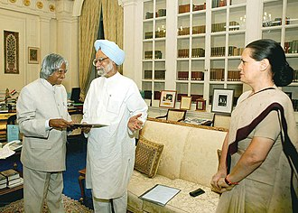

Post-Presidency

After leaving office, Kalam returned to teaching, and became a visiting professor at various institutions. He became a visiting professor at IIM Shillong, an honorary professor at his alma mater Anna University in Chennai, and an honorary fellow of the Indian Institute of Science at Bengaluru. In September 2007, he became the first chancellor of the newly established Indian Institute of Space Science and Technology at Thiruvananthapuram.
In 2011, Kalam voiced his support towards the establishment of the nuclear power plant at Koodankulam in Tamil Nadu, giving assurances for the safety of the facility.However, some of the locals were unconvinced by his statements on the safety of the plant, and were hostile to his visit.In May 2012, Kalam launched a programme called What Can I Give Movement aimed at the youth of India with a central theme of defeating corruption.
